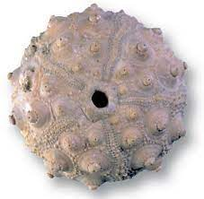

New here?

New to rockhounding and don't know where to start? Not to worry, we will show you the ropes. Click below to head over to our "Getting Started" guide
Getting StartedRocks & Minerals In Florida


Florida's diverse geology and subtropical climate provide a range of rockhounding opportunities, from hunting for shark teeth on Venice Beach to discovering calcite crystals in Ruck's Pit. With numerous fossil-rich rivers and crystal-filled mines, Florida is a rockhound's paradise.
Sponsored Dig Site

Own a digsite you would like to advertize in Florida? Contact us for more information about being our sponsor of the month! Email sponsors@rockhounding.org for more information.
Dig With UsPopular Rocks In Florida
-
 Shark Teeth
Shark TeethFlorida's beaches and riverbeds are well-known for an abundance of fossilized shark teeth, especially in Venice Beach.
Read More -
Agatized Coral
Agatized coral, Florida's state stone, is a colorful fossil that can be found in various locations, especially around Tampa Bay.
Read More -
 Calcite
CalciteCalcite crystals can be found in Florida's limestone caves and other sedimentary rock formations.
Read More -

Fossil Echinoids
Florida is home to a variety of fossil echinoids, which can be found in the state's sedimentary rock layers.
Read More -
 Apatite
ApatiteApatite, a phosphate mineral, can be found in Florida's phosphate mines, particularly in the Bone Valley Formation.
Read More -
 Kyanite
KyaniteKyanite, a metamorphic mineral, has been found in northern Florida, particularly in the Georgia border region.
Read More -
 Mammoth Teeth
Mammoth TeethFossilized mammoth teeth can occasionally be found in Florida's rivers and creeks, particularly in the northern part of the state.
Read More -
 Barite
BariteBarite, a sulfate mineral, can be found in Florida's limestone formations and sedimentary rock layers.
Read More -
 Fluorite
FluoriteFluorite crystals have been found in Florida, particularly in the northern part of the state and around phosphate mines.
Read More -
 Azurite
AzuriteAzurite, a copper carbonate mineral, has been found in small amounts in Florida, particularly in the northern part of the state.
Read More
Popular Areas In Florida
-
 Peace River
Peace RiverPeace River in central Florida is a well-known spot for finding shark teeth, mammal fossils, and marine fossils from the Miocene and Pliocene epochs.
Read More -
Ruck's Pit
Located in Fort Drum, Ruck's Pit is famous for its calcite crystal-filled fossilized clamshells, also known as "Fort Drum Crystal."
Read More -
Venice Beach
Venice Beach on Florida's Gulf Coast is often referred to as the "Shark Tooth Capital of the World," making it a prime destination for fossil hunters.
Read More -
Jackson's Crossroads Amethyst Mine
Located in northwestern Florida, this mine is famous for producing beautiful, deep purple amethyst crystals with unique red hematite inclusions.
Read More -
Withlacoochee River
The Withlacoochee River in central Florida is known for its abundant trace fossils, such as coprolites (fossilized feces), as well as shark teeth and other marine fossils.
Read More -
Hogtown Creek
Hogtown Creek in Gainesville, Florida, is a popular spot for rockhounding enthusiasts, where they can find quartz crystals, chert, and various types of agates.
Read More
Geology of Florida
Florida's geology is characterized by its flat landscape and extensive coastal plains, with most of the state's rock formations consisting of sedimentary materials, such as limestone, dolomite, and sandstone. These rocks were formed in shallow marine environments over millions of years, from the Mesozoic to the Cenozoic era.
Florida's limestone formations are rich in fossils, including marine invertebrates, sharks' teeth, and the remains of ancient coral reefs. Additionally, the state is known for its phosphate deposits, which have contributed to its industrial development and are a source of various minerals and fossils.
The Florida peninsula is underlain by a large carbonate platform, which has given rise to the state's extensive karst topography, including numerous sinkholes, springs, and caves. Florida's unique geology offers a variety of rockhounding opportunities, from searching for fossils and minerals in phosphate mines to exploring the state's karst landscape and its associated geological features.